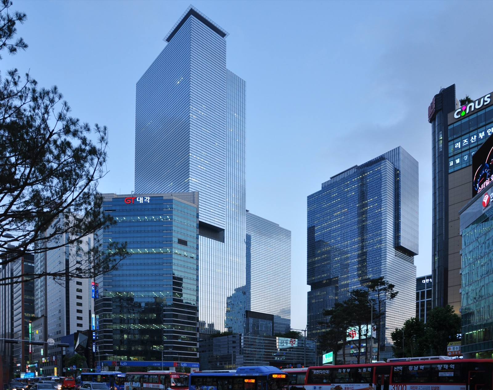
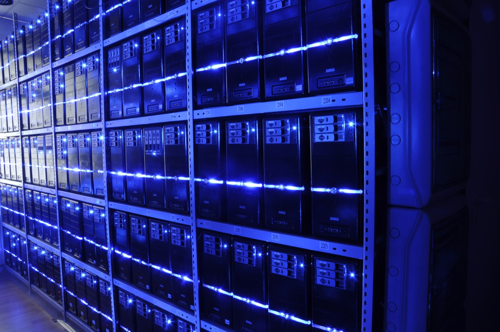
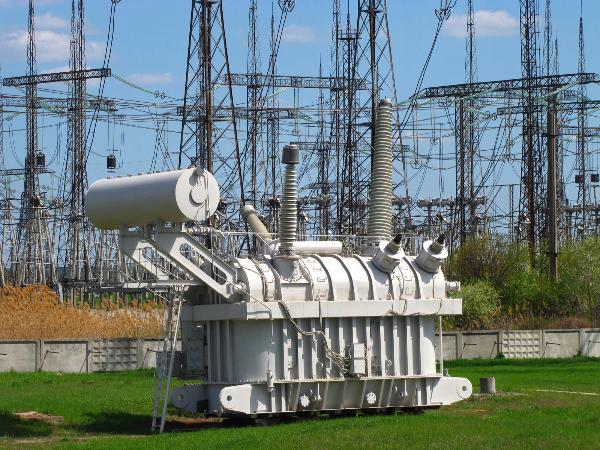

Executive Summary
2026년 9월 29일 삼성 계열사 여섯 곳이 헬릭스에 10억 달러, 약 1조 3,600억 원을 함께 넣는다고 밝혔다. 헬릭스는 사모펀드 KKR이 올해 6월에 세운 회사다. 하는 일은 데이터센터를 짓고 굴리는 것인데, 건물만 넘기지 않고 그 안에 들어갈 전기와 전기를 끌어오는 설비, 광통신망까지 한 묶음으로 넘긴다. 삼성전자가 5억 달러를 대고 삼성물산·삼성SDS·삼성SDI·삼성생명·삼성화재가 나머지 5억 달러를 나눠 댄다. 이 글은 그 묶음이 무엇이고 반도체를 팔던 회사가 왜 지분으로 들어갔는지를 본다.
헬릭스 최고경영자 아담 셀립스키는 회사를 출범시킨 날 CNBC 방송에 나와 발표된 데이터센터 사업의 25% 이상이 발표한 대로 굴러가지 않고 그 비중이 계속 늘고 있다고 말했다. 모자란 것은 칩이 아니라 전기와 부지다. 우드매킨지가 2025년 2분기에 집계한 대형 전력 변압기 납기는 평균 128주이고 값은 2019년보다 77% 올랐다. 다만 이번에 삼성이 산 것은 헬릭스의 지분이지 데이터센터 자체가 아니다. 계열사들이 받은 것은 공급과 시공을 맡을 자리다.
1절부터 4절까지는 삼성 공식 발표문과 국내외 보도에 적힌 내용이다. 5절은 그 사실을 데이터 품질의 눈으로 다시 읽은 이 글의 해석이다.
주요 수치
출처: 삼성 뉴스룸 발표문, 2026년 6월 11일 CNBC 셀립스키 인터뷰, 우드매킨지 2025년 2분기 공급망 조사.
10억 달러
삼성 여섯 곳의 공동 투자액
약 1조 3,600억 원. 삼성전자가 절반을 대고 나머지 다섯 곳이 절반을 나눠 댄다
110억 달러
헬릭스가 확보한 자본
출범 때 100억 달러가 넘었고 이번 삼성 투자가 그 위에 얹혔다
25%
발표대로 이행되지 않는 데이터센터 사업
발표된 사업 넷 중 하나 이상이 예정대로 진행되지 않는다는 셀립스키의 진단
128주
대형 변압기 평균 대기 기간
주문해서 받기까지 2년 반. 값은 2019년보다 77% 올랐다. 우드매킨지 2025년 2분기 조사
여섯 곳이 같은 회사에 돈을 넣고 일을 나눠 맡았다
삼성전자, 삼성물산, 삼성SDS, 삼성SDI, 삼성생명, 삼성화재. 업종이 제각각인 여섯 회사가 2026년 9월 29일 같은 날 같은 곳에 돈을 넣는다고 발표했다. 받는 쪽은 헬릭스 한 곳이고 금액은 합쳐서 10억 달러다. 삼성전자가 5억 달러를 대고 나머지 다섯 곳이 남은 5억 달러를 나눈다.

계열사가 여럿 참여하는 투자 자체는 드물지 않다. 이번 발표에서 눈에 띄는 대목은 돈을 댄 곳들이 각자 맡을 일까지 함께 적혀 있다는 점이다. 삼성 뉴스룸이 낸 발표문은 삼성전자 두 부문과 삼성물산, 삼성SDS, 삼성SDI가 무엇을 공급하는지를 한 줄씩 밝혀 놓았다. 여섯 곳 가운데 삼성생명과 삼성화재만은 투자자 명단에 이름이 있을 뿐 맡을 일이 적혀 있지 않다.
| 계열사 | 맡는 일 |
|---|---|
| 삼성전자 반도체 부문 | 데이터센터에 들어갈 최첨단 반도체 공급 |
| 삼성전자 DX 부문 | 공기 냉각과 액체 냉각 설비 |
| 삼성물산 | 데이터센터와 발전 설비의 설계·조달·시공 |
| 삼성SDS | 데이터센터 구축과 운영, GPU 클라우드 서비스 |
| 삼성SDI | 정전에 대비하는 무정전 전원 장치와 배터리 |
| 삼성생명·삼성화재 | 발표문에 역할 설명 없음. 투자에만 참여 |
칩, 냉각, 건물, 운영, 전원. 데이터센터 한 동을 세워 돌리는 데 필요한 것을 늘어놓으면 이 목록과 거의 겹치고, 여기에 금융 계열사 두 곳이 돈을 보탠다. 계열사가 각자 자기 물건을 팔러 들어간 것이 아니라, 여러 곳의 물건을 한 장의 공급 목록으로 묶어 내놓은 모양이다.
셀립스키의 반응은 삼성 발표문이 아니라 같은 날 헬릭스와 KKR이 따로 낸 발표에 실렸다. 그는 삼성의 이번 약정이 "헬릭스의 전략에 대한 강한 신뢰를 보여주는 동시에, 대규모 AI 인프라 수요에 대응하기 위해 구축해 온 장기자본 기반을 한층 강화하는 계기가 될 것"이라고 했고, "세계적인 기술 기업인 삼성은 헬릭스와 고객사에 기여할 수 있는 차별화된 역량을 갖추고 있다"고 덧붙였다. 삼성 쪽 발표문은 "헬릭스 및 파트너사들과 함께 글로벌 AI 데이터센터 인프라의 원활한 공급에 기여하고, 상호 시너지 창출을 지속적으로 추진해 나갈 계획"이라고 적었다. 두 문장이 같은 것을 다른 각도에서 말한다. 헬릭스에는 자본과 공급선이 생기고, 삼성에는 자기 물건이 들어갈 현장이 생긴다.
헬릭스가 파는 것은 건물이 아니라 묶음이다
헬릭스는 2026년 6월 11일에 출범했다. KKR이 주도하고 쿠웨이트투자청, 엔비디아, 미국 발전사 비스트라가 창립 투자자로 들어가 100억 달러가 넘는 자본으로 시작했다. 이번 삼성 투자를 더하면 확보 자본이 110억 달러를 넘는다. 삼성은 석 달 남짓 늦게 들어왔지만 발표문과 국내 보도는 삼성 관계사도 앞의 넷과 나란히 창립 투자자로 적는다. 최고경영자는 아마존웹서비스를 이끌었던 아담 셀립스키이고, KKR에서 인프라 투자를 총괄하는 발데마르 슐레자크가 최고투자책임자를 겸한다. KKR이 따로 두고 있는 인프라 전담 인력 170여 명도 이 회사가 끌어 쓴다.
회사가 내건 상품은 하이퍼스케일 데이터센터 하나가 아니다. 데이터센터를 개발하고 운영하는 일에 더해, 그 시설에 전기를 대는 발전 설비, 전기를 끌어오는 송배전 설비, 바깥과 연결하는 광통신망까지 한 묶음에 담아 판다. 셀립스키가 링크드인에 적은 문장이 왜 이렇게 묶었는지를 설명한다. "데이터센터·전력·커넥티비티가 너무 자주 별개 트랙으로 지어져 왔다. AI 시대의 전례 없는 인프라 구축에서 그 파편화가 업계 전체의 병목이 됐다."
이 진단이 과장이 아니라는 근거로 셀립스키가 든 것이 앞서 말한 25%다. 출범 당일 CNBC 방송에 나와 그는 짓겠다고 발표만 해 놓고 그대로 이행되지 못하는 사업이 넷 중 하나를 넘고 그 몫도 계속 커진다고 했다. 복잡한 데이터센터 사업이 손쉽게 규모를 키울 수 있다는 생각은 잘못된 이름표라는 말도 함께 했다. 이유로는 부지 인근 주민의 반대가 세지는 흐름을 지목했다. 실제로 시애틀 시의회는 그 이틀 전인 6월 9일 대형 데이터센터 신축을 1년 동안 멈추는 조례를 만장일치로 통과시켰다. 짓겠다는 발표와 실제로 전원이 들어오는 날 사이의 거리가 점점 멀어진다.
전기 쪽 숫자도 같은 방향을 가리킨다. 우드매킨지가 2025년 2분기 공급망 조사에서 집계한 대형 전력 변압기 납기는 주문에서 납품까지 평균 128주였고 가격은 2019년보다 77% 올랐다. 창립 투자자인 비스트라의 최고경영자 짐 버크는 발전과 그리드 연계가 AI 인프라 배치의 핵심 게이팅 요인이라고 말했다. 비스트라는 미국 18개 주와 워싱턴DC에 걸친 발전 자산을 갖고 있고, 하이퍼스케일 사업자를 상대로 5,000MW가 넘는 전력 구매 계약을 이미 맺어 둔 상태다. 헬릭스가 전기를 따로 사 오는 대신 발전사를 창립 주주로 데려온 이유가 여기 있다.
삼성은 흩어져 있던 능력을 한자리에 모은다
1절의 역할 목록에는 새로 만든 능력이 하나도 없다. 삼성전자는 반도체를 팔고, 삼성물산은 발전소와 플랜트를 짓고, 삼성SDS는 데이터센터를 운영하고, 삼성SDI는 배터리를 만든다. 넷 다 이번 발표가 나오기 전부터 하던 일이다. 발표문이 내세운 근거도 전부 이미 있는 실적이다. 삼성SDS의 전력사용효율 기술은 국내 최고 수준이고 국가AI컴퓨팅센터 구축에도 쓰이고 있다고 적혀 있다. 냉각만 조금 새롭지만 이것도 2025년에 독일 공조 기업 플랙트그룹을 인수하면서 들여온 능력이고, 그 회사는 세계 14곳의 생산 거점과 65개국 공급망을 이미 갖고 있다. 이번 발표는 없던 사업에 뛰어든 것이 아니라 이미 흩어져 있던 것을 한 딜에 모은 쪽에 가깝다.

모으면 무엇이 달라지는가. 그동안 계열사들은 각자 고객에게 각자의 물건을 팔았다. 반도체는 반도체대로, 배터리는 배터리대로 입찰에 들어갔고, 그 물건들이 결국 같은 건물에 들어가더라도 계약은 따로였다. 헬릭스 지분을 함께 쥐면 그 건물을 짓는 회사의 주주 자리에서 공급을 논의하게 된다. 파는 쪽과 사는 쪽 사이의 거리가 줄어든다.
이 구조를 삼성이 처음 생각해 낸 것은 아니다. 헬릭스는 출범할 때부터 투자자가 곧 공급자인 회사로 짜여 있었다. 창립 투자자 비스트라는 지분을 넣는 동시에 헬릭스가 벌이는 사업의 우선 전력 공급자 자리를 받았다. 미국 18개 주와 워싱턴DC에 발전 자산을 두고 하이퍼스케일 사업자와 5,000MW가 넘는 전력 구매 계약을 이미 맺어 둔 회사가 자기가 돈을 댄 시설에 자기 전기를 판다는 뜻이다. 엔비디아도 칩과 기술을 대는 쪽이면서 창립 투자자다. 다만 비스트라가 건 것은 전기 하나이고 엔비디아가 건 것은 칩 하나인데, 삼성은 반도체와 냉각과 시공과 운영과 전원을 한꺼번에 걸었다. 같은 자리에 다섯 갈래로 들어간 셈이다.
지금까지 삼성이 AI 호황에서 얻은 몫은 대체로 부품 값이었다. 고대역폭 메모리가 잘 팔리면 실적이 오르고 안 팔리면 내려가는 구조다. 그 대비를 적은 것은 보도가 아니라 삼성 자신이다. 발표문은 이번 투자로 "삼성은 AI 생태계에서 부품 공급자에 머물지 않고 인프라 생태계 구축에 직접 참여하는 주체로 위상을 넓혀 나갈 전망"이라고 썼다. 부품을 대는 자리에서 그 부품이 돌아갈 현장의 지분을 갖는 자리로 한 칸 옮겼다는 이야기다.
다만 옮긴 폭을 과장하지 않는 편이 정확하다. 삼성이 취득한 것은 헬릭스라는 회사의 지분이고, 데이터센터의 소유권이나 운영권을 직접 받은 것이 아니다. 발표문에 적힌 역할도 공급과 시공과 운영 서비스이지 자산 보유가 아니다. 바뀐 것은 삼성이 그 현장의 결정 구조 안쪽에 한 발을 들였다는 사실이고, 그 한 발이 얼마나 넓어질지는 아직 발표에 없다.
병목이 칩에서 전기로 내려왔다
이 딜을 한 건의 뉴스로만 읽으면 삼성이 큰돈을 썼다는 이야기로 끝난다. 앞뒤를 붙여 보면 다른 그림이 나온다. 몇 해 전까지 AI 경쟁의 승부처는 모델과 칩이었다. GPU를 몇 장 확보했느냐가 곧 순위였다. 지금 발표되는 소식들은 그 앞단이 아니라 뒷단에 몰려 있다. 어디에 부지를 잡았고, 전기를 몇 메가와트 확보했고, 변압기를 언제 받느냐가 기사 제목에 오른다.
이렇게 읽는 것은 바깥 사람만이 아니다. 삼성 발표문 자신이 헬릭스의 구상을 설명하면서 "AI 인프라의 최대 병목인 전력원 확보"라고 적었다. 데이터센터가 AI 시대의 생산기지라면 전력은 그 생산기지를 움직이는 동력이고 두 인프라를 함께 확보하는 역량이 핵심 경쟁력이 되고 있다는 문장도 같은 발표문에 있다. 돈을 낸 쪽이 자기 보도자료에서 병목의 이름을 전력이라고 불렀다.
데이터센터 한 동은 1~2년이면 세우지만 새 송전선은 계획에서 준공까지 5년에서 10년이 걸린다는 것이 컨설팅 업계의 공통된 추정이다. 건물보다 전선이 느리다. 국내 분석도 같은 이동을 짚는다. 삼일PwC가 2026년 9월 17일 낸 「글로벌 데이터센터 전망 2026~2050」은 전체 데이터센터 투자에서 GPU와 서버 같은 정보통신 장비가 차지하는 비중이 2026년 70%에서 2050년 93%까지 올라가고, 산업의 가치가 건물과 부지에서 GPU·메모리·전력기기·냉각설비로 옮겨 간다고 봤다. 이 장비를 4~6년마다 갈아야 해서 한 시설을 20년 굴리면 대규모 재투자가 세 번에서 다섯 번 더 온다고도 적었다. 껍데기는 오래 가고 안에 든 것이 주기적으로 갈린다.

헬릭스의 사업 구성은 이 진단에 정확히 대응한다. 전기가 병목이라 발전사를 주주로 데려왔고, 연결이 늦고 완공이 밀리는 것도 같은 문제라 광통신망과 설계·시공을 상품에 함께 넣었다. 삼성 계열사가 들어간 자리도 마찬가지다. 칩과 냉각, 시공과 전원, 운영까지 병목이 생기는 지점마다 계열사가 하나씩 붙어 있고, 금융 두 곳이 그 뒤에서 돈을 댄다.
페블러스가 이 투자를 주목하는 이유
지금부터는 같은 발표에서 데이터가 어디에 쌓이는지를 짚는다.
1절의 역할 목록에서 삼성SDS의 자리가 나머지와 성격이 다르다. 반도체와 냉각기와 배터리는 납품하고 나면 손을 떠나지만, 운영은 시설이 돌아가는 내내 계속되는 일이다. 데이터센터를 운영한다는 것은 서버가 몇 시간 돌았고 어느 랙이 언제 멈췄고 전력을 얼마나 먹었는지가 초 단위로 쌓이는 자리에 서 있다는 뜻이다. 부품을 팔 때는 그 부품이 현장에서 어떻게 버티는지 대체로 고객사의 기록 안에 있고 판 쪽은 잘 모른다.
그 기록이 쌓이면 무엇을 할 수 있는지는 이미 다른 회사들이 보여 줬다. 어느 조건에서 냉각이 부족해지는지, 어떤 부하 패턴에서 전력 효율이 무너지는지, 배터리가 몇 번째 방전에서 성능이 꺾이는지를 아는 쪽이 다음 제품의 설계를 고친다. 칩을 파는 회사와 그 칩이 하루 스물네 시간 돌아가는 현장을 보는 회사는 같은 시장에 있어도 쥐고 있는 정보가 다르다.
여기서 한 가지는 분명히 해 두어야 한다. 이번 발표문 어디에도 삼성이 헬릭스 데이터센터의 운영 데이터를 가져간다는 말은 없다. 데이터의 소유와 이용은 계약으로 정해지는 사안이고, 그 계약 내용은 공개되지 않았다. 위 문단은 운영을 맡으면 그 자리에 기록이 생긴다는 일반론이지 이번 딜의 조건이 아니다.
그래도 질문 하나는 남길 만하다. AI 산업에서 오래 값이 나가는 자산은 칩인가, 그 칩이 돌아간 기록인가. 칩은 2~3년이면 다음 세대에 밀리지만 현장에서 나온 가동 기록은 쌓일수록 값이 오른다. 다음 세대 칩을 어떻게 만들지, 냉각을 어디까지 밀어붙여도 되는지를 정하는 근거가 거기서 나오기 때문이다. 페블러스가 데이터 품질을 다루며 자주 마주치는 장면도 이것과 닮아 있다. 설비를 들이는 데는 예산을 쓰면서, 그 설비가 남기는 기록을 쓸 수 있는 형태로 모으는 일에는 아무도 예산을 쓰지 않는다. 몇 해가 지난 뒤 남는 것은 로그가 아니라 인상뿐이다.
여기까지 읽어 주셔서 감사하다. 삼성 발표 원문은 삼성 뉴스룸에서 볼 수 있다. 여러분의 조직에도 설비나 장비가 남기는 기록이 있다면, 그 기록이 나중에 꺼내 쓸 수 있는 형태로 남고 있는지 한번 확인해 보시고 무엇이 비어 있었는지 들려주시면 좋겠다.
참고문헌
공식 발표
- 1.삼성전자 뉴스룸. (2026-09-29). "삼성 6개사, 美 AI 인프라 기업 '헬릭스'에 10억 달러 투자." 계열사별 역할, "AI 인프라의 최대 병목인 전력원 확보", "부품 공급자에 머물지 않고" 문장의 원문. 삼성생명·삼성화재의 역할은 이 발표문에 적혀 있지 않다.
- 2.Samsung Newsroom. (2026-09-29). "Samsung to Invest USD 1 Billion in AI Infrastructure Company Helix." 위 발표문의 영문판.
국내 보도
- 3.AI타임스. (2026-09-29). "삼성 6개사, 미국 AI 인프라 기업 헬릭스에 1.4조 투자."
- 4.한국경제. (2026-09-29). "삼성그룹, AI 인프라 베팅…美 헬릭스에 10억弗 투자." 헬릭스 설립 시점 표기가 다른 자료와 어긋나 이 글은 채택하지 않았다.
- 5.서울신문. (2026-09-29). "삼성 6개사, 美 AI 인프라 '헬릭스'에 10억 달러 투자." 계열사별 투자 금액과 창립 투자자 지위.
- 6.이투데이. (2026-09-29). "KKR 설립 AI 인프라 기업 헬릭스, 삼성으로부터 10억 달러 유치." 셀립스키 인용문의 출처. 이 발언은 삼성 발표문이 아니라 같은 날 헬릭스·KKR이 낸 발표에 실렸다.
- 7.삼일PwC. (2026-09-17). "AI 인프라 경쟁, 데이터센터 넘어 '전력·공급망'으로." 「글로벌 데이터센터 전망 2026~2050」의 정보통신 장비 비중 70%→93%, 4~6년 교체 주기.
해외 보도·업계 자료
- 8.GeekWire. (2026-06-11). "Former AWS CEO Adam Selipsky to lead $10B AI data center venture." 출범 당일 CNBC 방송에서 나온 "25% 이상" 발언을 전한 기사.
- 9.CNBC. (2026-09-29). "Samsung to invest $1 billion in Nvidia- and KKR-backed AI infrastructure firm Helix."
- 10.DataCenterDynamics. (2026-06-11). "KKR launches Helix Digital Infrastructure to deliver hyperscale data centers with secured power." 출범 구조, 비스트라의 우선 전력 공급자 지위와 5,000MW 계약 실적.
- 11.Wood Mackenzie. (2025). "Transformer troubles: manufacturing and policy constraints hit US transformer supply." 2025년 2분기 공급망 조사의 변압기 납기 128주와 2019년 대비 77% 인상.
- 12.Seattle City Council. (2026-06-09). "City Council passes emergency data center moratorium and policy framework." 대형 데이터센터 신축 1년 중단 조례.